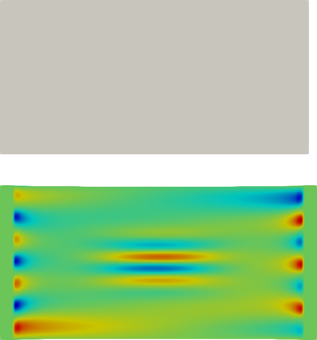
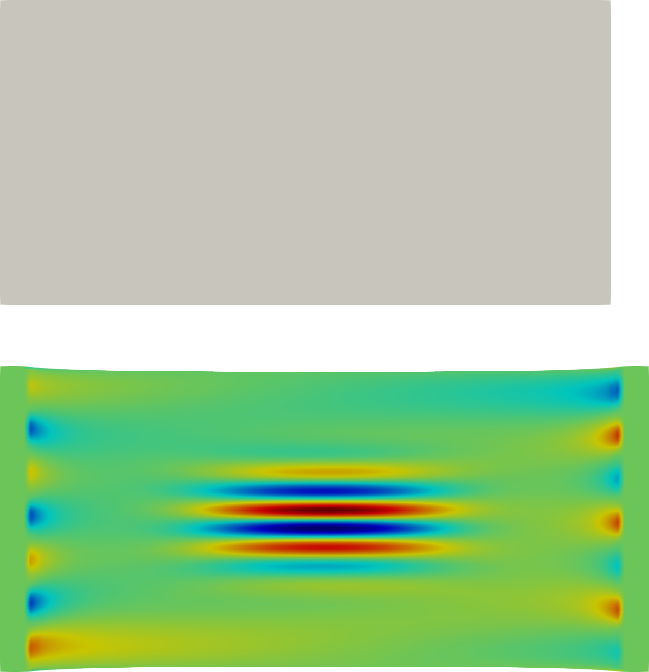
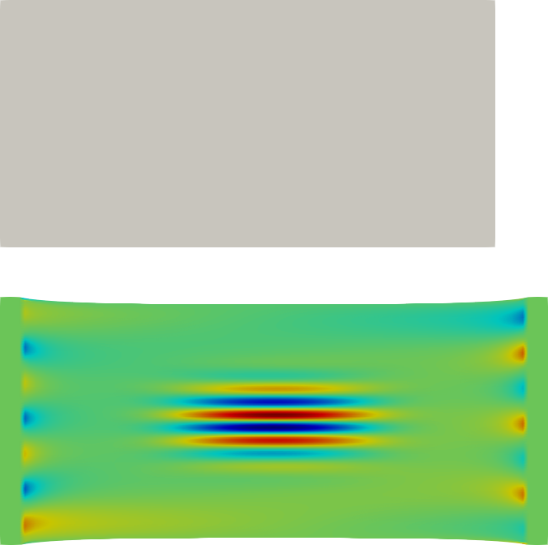

Paper Notes.
cal72@cam.ac.uk
Deformation process from $\Omega_o$ into $\Omega$.
$$\rho \mathbf{u}_{tt}= \nabla \cdot \mathbb{T}+\mathbf{f}$$Where $\mathbf{u}=\mathbf{r}-\mathbf{r_o}$, $\mathbf{r}$ in $\Omega$ and $\mathbf{r}_o$ in $\Omega_o$, $\mathbf{f}$ external body forces, $\mathbb{T}$ stress tensor.
The relationhip between $\mathbf{T}$ and $\mathbb{u}$ determines the type of material (solid, fluid, etc.)
Example: Linear isotropic elastic body (Hooke's solid):
$$\mathbb{E}=\frac{1}{2}\left( \mathbb{\nabla u} + \mathbb{\nabla u }^T \right)$$and:
$$\mathbb{T}=C:\mathbb{E}=\lambda tr(\mathbb{E})+2\mu\mathbb{E}$$give:
$$\small{\rho\mathbf{u}_{tt}=\mathbf{f}+(\lambda+\mu)\nabla(\nabla\cdot\mathbf{u})+\nabla^2\mathbf{u} }$$Required:
Initial configuration.
Boundary conditions (Robin,Dirichlet,Neumann).
Constitutve law.
Material parameter values.
Buckling and Wrinkling.
Non-linear critical phenomena.
The stationary solution becomes instable and new configuartions appear for a set of critcal stresses.
The resultant pattern is determined by the geometry of the domain, boundary conditions and forces.
$\Delta x=0.0$.
$\Delta x=0.05$.
$\Delta x=0.62$.
$\Delta x=1.68$.
In general the problem at hand is to compute extremal values of the energy $U$ of a thin film
$$U=U_B+U_S-L$$
Where $U_B$ and $U_S$ represent the bending energy and the stretching energy.
$L$ represent any geometrical constraint (Lagrange multiplier).
A compressive threshold always needs to be reached in order to buckle.
In general $\lambda\simeq \left(\frac{B}{K} \right)^{1/4}$ and $A\simeq(\lambda_x)^{1/2}\lambda$.
$B$ bending stiffness, $K$ foundation stiffness, $\lambda_x$ compressive stretch.
1.- Thin sheet with bending stiffness.
2.- Elastic foundation.
3.- Imposed compressive strain.
The geometric packing constraint leads to the formation of wrinkles, the bending resistance penalizes short wavelengths, the foundation penalizes long wavelengths, thus leading to new intermediate scales.
If the threshold is not reached there is no pattern.
For bilayer systems, asymptotics reveal the role of the material properties.
Uniaxial induced wrinkles are always reversible (no hysteresis, Alessandra?).
Growth induced wrinkles is irreversible.
Can we compare?
Growth tensors:
Natural extension to spatial processes.
Determine the bifurcation thresholds.
Curvature 2d:
Delays the wrinkle formation.
Enforced by boundary conditions.
Volumetric case:
Base of domain stretching.
Stiffer cell wall or more than two domains.